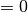

The system module contains low-level routines for I/O, timing, random number generation etc. The Inoutput type is used to abstract both formatted and unformatted (i.e. binary) I/O.
Module contents for quippy.system:
Classes
| InOutput(...) | Open a file for reading or writing. |
Functions
| find_closing_delimiter(...) |
|
||
| pick_up_unit() | OMIT | ||
| system_resync_rng() | References |
||
| upper_case(word) | Convert a word to upper case | ||
| get_mpi_size_rank(comm) | Return the mpi size and rank for the communicator comm. | ||
| system_timer(...) | Measure elapsed CPU and wall clock time between pairs of calls with matching name parameter. | ||
| verbosity_of_str(str) | Map from descriptive verbosity names (NORMAL, VERBOSE etc.) to numbers | ||
| reference_true() |
|
||
| th(n) | Return the correct ordinal ending (st,nd,rd,th) for the given integer | ||
| next_non_separator(start,end,separators) |
|
||
| hello_world([seed,common_seed]) | Called by system_initialise to print welcome messages and seed the random number generator. | ||
| get_env_var(name,[status]) |
|
||
| ran_exp() | Return a random real distributed exponentially between zero and positive infinity | ||
| parse_string(delimiters,fields,[matching,error]) | outdated - please use split_string | ||
| parse_string_orig(delimiters,fields) | Parse a string into fields delimited by certain characters. | ||
| system_initialise(...) | Must be called at the start of all programs. | ||
| verbosity_pop() | pop the current verbosity value off the stack | ||
| get_quippy_running() |
|
||
| round(r,digits) | Concatenation functions. | ||
| system_get_random_seed() | Return the current random number seed. | ||
| set_timing(do_timing) |
|
||
| real_sci_format_length() |
|
||
| enable_timing() | References |
||
| mem_info() |
|
||
| system_omp_set_num_threads(threads) |
|
||
| link_run_directory(...) |
|
||
| ran_uniform() | Return a random real number uniformly distributed in the range [0,1] | ||
| mpi_id() | Return this processes’ MPI ID | ||
| progress(total,current,name) |
|
||
| linebreak_string(str,line_len) |
|
||
| system_finalise() | Shut down gracefully, finalising system objects. | ||
| print_title(title,[verbosity]) | Print a centred title, like this: | ||
| wait_for_file_to_exist(...) |
|
||
| system_omp_get_num_threads() |
|
||
| string_to_logical(string,[err]) | Convert an input string into a logical. | ||
| split_string(separators,quotes,fields,[matching]) | split a string at separators, making sure not to break up bits that | ||
| verbosity_to_str(val) | Map from verbsoity codes to descriptive strings | ||
| string_to_int(string,[err]) | Convert an input string into an integer. | ||
| real_format_length(r) |
|
||
| alloc_trace(str,amt) |
|
||
| parallel_print(lines,comm,[verbosity,file]) |
|
||
| verbosity_set_minimum(verbosity) | set the minimum verbosity value, by pushing value onto | ||
| current_version() |
|
||
| increase_stack(stack_size) |
|
||
| current_verbosity() | return the current value of verbosity | ||
| verbosity_push_decrement([n]) | push the current value - n onto the stack | ||
| reference_false() |
|
||
| cmd_arg_count() |
|
||
| abort_on_mpi_error(error_code,routine_name) | Abort with a useful message if an MPI routine returned an error status | ||
| linebreak_string_length(str,line_len) |
|
||
| print_warning(message) | Print a warning message to default mainlog, but don’t quit | ||
| get_cmd_arg(i,[status]) |
|
||
| ran_string(l) | Return a random string of length l containing the characters A-Z, a-z, and 0-9 | ||
| verbosity_unset_minimum() | unset the minimum verbosity value, by popping value from | ||
| get_mainlog_errorlog_ptr() |
|
||
| verbosity_push_increment([n]) | push the current value + n onto the stack | ||
| system_reseed_rng(new_seed) | Reseed the random number generator. | ||
| mpi_n_procs() | Return the total number of MPI processes. | ||
| ran() | Return a random integer | ||
| lower_case(word) | Convert a word to lower case | ||
| system_set_random_seeds(seed) |
|
||
| s2a(s) | String to character array | ||
| verbosity_push(val) | Push a value onto the verbosity stack | ||
| int_format_length(i) |
|
||
| pad(s,l,n0) | String to padded character array of length l | ||
| dealloc_trace(str,amt) |
|
||
| string_to_real(string,[err]) | Convert an input string into a real. | ||
| a2s(a) | Character array to string | ||
| date_and_time_string(values) | Take the values from date_and_time and make a nice string | ||
| get_timing() |
|
||
| disable_timing() | References |
||
| split_string_simple(str,separators,n0,[error]) | split a string into fields separated by possible separators | ||
| is_file_readable(filename) | Test if the file filename can be accessed. | ||
| current_times([cpu_t,wall_t,mpi_t]) |
|
||
| ran_normal() | Return random real from Normal distribution with mean zero and standard deviation one. | ||
| make_run_directory(...) |
|
||
| optional_default(*args, **kwargs) | takes as arguments a default value and an optional argument, and | ||
| string_to_numerical(*args, **kwargs) | Routine is wrapper around Fortran interface string_to_numerical containing multiple routines: | ||
| print_(*args, **kwargs) | Overloaded interface for printing. |
Attributes
| Name | Value |
|---|---|
| qp | 8 |
| INOUT | 2 |
| PRINT_NERD | 1000 |
| COMPLEX_SIZE | 16 |
| PRINT_NORMAL | 0 |
| REAL_SIZE | 8 |
| ran_Q | 127773 |
| PRINT_VERBOSE | 1 |
| PRINT_ANAL | 10000 |
| ran_M | 2147483647 |
| INTEGER_SIZE | 4 |
| ran_R | 2836 |
| NUMERICAL_ZERO | 1e-14 |
| ran_A | 16807 |
| MAX_READABLE_ARGS | 100 |
| OUTPUT | 1 |
| PRINT_SILENT | -1 |
| INPUT | 0 |
| PRINT_ALWAYS | -100000 |
| dp | 8 |
| TIMER_STACK | 500 |
Bases: quippy.oo_fortran.FortranDerivedType
Open a file for reading or writing. The action optional parameter can be one of INPUT (default), OUTPUT or INOUT. For unformatted output, the isformatted optional parameter must be set to false.
| Parameters: | filename : input string(len=-1), optional action : input int, optional isformatted : input int, optional append : input int, optional verbosity : input int, optional verbosity_cascade : input int, optional master_only : input int, optional unit : input int, optional error : in/output rank-0 array(int,’i’), optional |
|---|
References
Routine is wrapper around Fortran routine __init__initialise defined in file libAtoms/System.f95. Class is wrapper around Fortran type InOutput defined in file libAtoms/System.f95.
Attributes
| active | Does it print? |
Methods
| activate(*args, **kwargs) | inoutput_activate | ||
| backspace([n]) | Move the file pointer back by n (defaults to 1) records. | ||
| close(*args, **kwargs) | Close file but don’t finalise this Inoutput | ||
| deactivate(*args, **kwargs) | inoutput_deactivate | ||
| do_output(*args, **kwargs) |
|
||
| is_same_fortran_object(other) | Test if self and other point to the same Fortan object. | ||
| mpi_all_inoutput([value]) |
|
||
| parse_line(delimiters,fields,[status]) | Call parse_string on the next line from a file | ||
| print_mem_info([file]) |
|
||
| print_mpi_id([value]) |
|
||
| read_ascii(*args, **kwargs) | Wrapper around Fortran interface read_ascii containing multiple routines: | ||
| read_line([status]) | Read a line of text from a file (up to a line break, or 1024 characters). | ||
| rewind(*args, **kwargs) | Rewind to the start of this file. | ||
| shallow_copy() | Return a shallow copy of self. | ||
| shallow_copy_from(other) | Transform self into a shallow copy of other. |
inoutput_activate
Activate an Inoutput object temporarily.
References
Routine is wrapper around Fortran routine activate defined in file libAtoms/System.f95.
Move the file pointer back by n (defaults to 1) records. Works for formatted and unformatted files.
| Parameters: | n : input int, optional |
|---|
References
Routine is wrapper around Fortran routine backspace defined in file libAtoms/System.f95.
Close file but don’t finalise this Inoutput
References
Routine is wrapper around Fortran routine inoutput_close defined in file libAtoms/System.f95.
inoutput_deactivate
Deactivate an Inoutput object temporarily.
References
Routine is wrapper around Fortran routine deactivate defined in file libAtoms/System.f95.
| Parameters: | ret_inoutput_do_output : int |
|---|
References
Routine is wrapper around Fortran routine inoutput_do_output defined in file libAtoms/System.f95.
| Parameters: | value : input int, optional |
|---|
References
Routine is wrapper around Fortran routine mpi_all_inoutput defined in file libAtoms/System.f95.
Call parse_string on the next line from a file
| Parameters: | delimiters : input string(len=-1) fields : in/output rank-2 array(‘S’) with bounds (qp_n0,(*)) status : in/output rank-0 array(int,’i’), optional |
|---|---|
| Returns: | num_fields : int |
References
Routine is wrapper around Fortran routine parse_line defined in file libAtoms/System.f95.
| Parameters: | file : inoutput object, optional |
|---|
References
Routine is wrapper around Fortran routine print_mem_info defined in file libAtoms/System.f95.
| Parameters: | value : input int, optional |
|---|
References
Routine is wrapper around Fortran routine print_mpi_id defined in file libAtoms/System.f95.
Wrapper around Fortran interface read_ascii containing multiple routines:
- read_ascii(n0[, status])
Read scalar and array data from ascii files. These interfaces are not yet heavily overloaded to cater for all intrinsic and most derived types.
Parameters:
- n0 (input int) – shape(qp_da,0)
- status (in/output rank-0 array(int,’i’), optional) –
Returns: da – rank-1 array(‘d’) with bounds (qp_n0)
Routine is wrapper around Fortran routine reada_real_dim1 defined in file libAtoms/System.f95.
- read_ascii(n0[, status])
Parameters:
- n0 (input int) – shape(qp_ia,0)
- status (in/output rank-0 array(int,’i’), optional) –
Returns: ia – rank-1 array(‘i’) with bounds (qp_n0)
Routine is wrapper around Fortran routine reada_int_dim1 defined in file libAtoms/System.f95.
Read a line of text from a file (up to a line break, or 1024 characters). This can then be parsed by the calling routine (using parse_line for example)
Optionally, a status is returned which is:
begin{itemize} item if the end of the file is reached item  if no problems were encountered item if there was a read error end{itemize}
The actual number returned is implementation specific
| Parameters: | status : in/output rank-0 array(int,’i’), optional |
|---|---|
| Returns: | ret_inoutput_read_line : string(len=1024) |
References
Routine is wrapper around Fortran routine read_line defined in file libAtoms/System.f95.
Rewind to the start of this file. Works for both formatted and unformatted files.
References
Routine is wrapper around Fortran routine rewind defined in file libAtoms/System.f95.
Does it print?
| Parameters: | closing_delim : input string(len=-1) opening_delims : input string(len=-1) closing_delims : input string(len=-1) matching : input int |
|---|---|
| Returns: | ret_pos : int |
References
Routine is wrapper around Fortran routine find_closing_delimiter defined in file libAtoms/System.f95.
OMIT
| Returns: | ret_unit : int |
|---|
References
Routine is wrapper around Fortran routine pick_up_unit defined in file libAtoms/System.f95.
References
Routine is wrapper around Fortran routine system_resync_rng defined in file libAtoms/System.f95.
Convert a word to upper case
| Parameters: | word : input string(len=-1) |
|---|---|
| Returns: | ret_upper_case : string(len=1024) |
References
Routine is wrapper around Fortran routine upper_case defined in file libAtoms/System.f95.
Return the mpi size and rank for the communicator comm. this routine aborts of _MPI is not defined
| Parameters: | comm : input int
nproc : int
rank : int
|
|---|
References
Routine is wrapper around Fortran routine get_mpi_size_rank defined in file libAtoms/System.f95.
Measure elapsed CPU and wall clock time between pairs of calls with matching name parameter. Calls to system_timer must be properly nested (i.e. start and stop from different pairs can’t overlap), and maximum depth of calls is set by the TIMER_STACK parameter.
call system_timer(name) start the clock
... do something
call system_timer(name) stop clock and print elapsed time
If optional do_always argument is true, routine will do its thing even
if system_do_timing is false.
| Parameters: | name : input string(len=-1)
do_always : input int, optional time_elapsed : in/output rank-0 array(float,’d’), optional do_print : input int, optional |
|---|
References
Routine is wrapper around Fortran routine system_timer defined in file libAtoms/System.f95.
Map from descriptive verbosity names (NORMAL, VERBOSE etc.) to numbers
| Parameters: | str : input string(len=-1) |
|---|---|
| Returns: | ret_val : int |
References
Routine is wrapper around Fortran routine verbosity_of_str defined in file libAtoms/System.f95.
| Returns: | ret_reference_true : int |
|---|
References
Routine is wrapper around Fortran routine reference_true defined in file libAtoms/System.f95.
Return the correct ordinal ending (st,nd,rd,th) for the given integer
| Parameters: | n : input int |
|---|---|
| Returns: | ret_th : string(len=2) |
References
Routine is wrapper around Fortran routine th defined in file libAtoms/System.f95.
| Parameters: | start : input int end : input int separators : input string(len=-1) dist : int ret_c : string(len=1) |
|---|
References
Routine is wrapper around Fortran routine next_non_separator defined in file libAtoms/System.f95.
Called by system_initialise to print welcome messages and seed the random number generator.
| Parameters: | seed : input int, optional
common_seed : input int, optional
|
|---|
References
Routine is wrapper around Fortran routine hello_world defined in file libAtoms/System.f95.
| Parameters: | name : input string(len=-1) status : in/output rank-0 array(int,’i’), optional |
|---|---|
| Returns: | arg : string(len=1024) |
References
Routine is wrapper around Fortran routine get_env_var defined in file libAtoms/System.f95.
Return a random real distributed exponentially between zero and positive infinity with mean and variance of unity
| Returns: | ret_r : float |
|---|
References
Routine is wrapper around Fortran routine ran_exp defined in file libAtoms/System.f95.
outdated - please use split_string Parse a string into fields delimited by certain characters. On exit the fields array will contain one field per entry and num_fields gives the total number of fields. status will be given the error status (if present) and so can be used to tell if an end-of-file occurred.
| Parameters: | delimiters : input string(len=-1) fields : in/output rank-2 array(‘S’) with bounds (qp_n0,(*)) matching : input int, optional error : in/output rank-0 array(int,’i’), optional |
|---|---|
| Returns: | num_fields : int |
References
Routine is wrapper around Fortran routine parse_string defined in file libAtoms/System.f95.
Parse a string into fields delimited by certain characters. On exit the fields array will contain one field per entry and num_fields gives the total number of fields. status will be given the error status (if present) and so can be used to tell if an end-of-file occurred.
| Parameters: | delimiters : input string(len=-1) fields : in/output rank-2 array(‘S’) with bounds (qp_n0,(*)) |
|---|---|
| Returns: | num_fields : int |
References
Routine is wrapper around Fortran routine parse_string_orig defined in file libAtoms/System.f95.
Must be called at the start of all programs. Initialises MPI if present, set the random number seed sets up the default Inoutput objects logger and errorlog to point to stdout and stderr respectively. Calls Hello_World to do some of the work and print a friendly welcome. If we’re using MPI, by default we set the same random seed for each process. This also attempts to read the executable name, the number of command arguments, and the arguments themselves.
| Parameters: | verbosity : input int, optional
seed : input int, optional
mpi_all_inoutput : input int, optional
common_seed : input int, optional enable_timing : input int, optional
quippy_running : input int, optional
mainlog_file : input string(len=-1), optional mainlog_unit : input int, optional
|
|---|
References
Routine is wrapper around Fortran routine system_initialise defined in file libAtoms/System.f95.
pop the current verbosity value off the stack
References
Routine is wrapper around Fortran routine verbosity_pop defined in file libAtoms/System.f95.
| Returns: | ret_get_quippy_running : int |
|---|
References
Routine is wrapper around Fortran routine get_quippy_running defined in file libAtoms/System.f95.
Concatenation functions. Overloadings for the // operator to make strings from various other types. In each case, we need to work out the exact length of the resultant string in order to avoid printing excess spaces. Return a string which is the real number r rounded to digits decimal digits
| Parameters: | r : input float digits : input int |
|---|---|
| Returns: | ret_round : string(len=1024) |
References
Routine is wrapper around Fortran routine round defined in file libAtoms/System.f95.
Return the current random number seed.
| Returns: | ret_system_get_random_seed : int |
|---|
References
Routine is wrapper around Fortran routine system_get_random_seed defined in file libAtoms/System.f95.
| Parameters: | do_timing : input int |
|---|
References
Routine is wrapper around Fortran routine set_timing defined in file libAtoms/System.f95.
| Returns: | ret_len : int |
|---|
References
Routine is wrapper around Fortran routine real_sci_format_length defined in file libAtoms/System.f95.
References
Routine is wrapper around Fortran routine enable_timing defined in file libAtoms/System.f95.
| Parameters: | total_mem : float free_mem : float |
|---|
References
Routine is wrapper around Fortran routine mem_info defined in file libAtoms/System.f95.
| Parameters: | threads : input int |
|---|
References
Routine is wrapper around Fortran routine system_omp_set_num_threads defined in file libAtoms/System.f95.
| Parameters: | sourcename : input string(len=-1) basename : input string(len=-1), optional run_dir_i : in/output rank-0 array(int,’i’), optional error : in/output rank-0 array(int,’i’), optional |
|---|---|
| Returns: | ret_dir : string(len=1024) |
References
Routine is wrapper around Fortran routine link_run_directory defined in file libAtoms/System.f95.
Return a random real number uniformly distributed in the range [0,1]
| Returns: | ret_ran_uniform : float |
|---|
References
Routine is wrapper around Fortran routine ran_uniform defined in file libAtoms/System.f95.
Return this processes’ MPI ID
| Returns: | ret_id : int |
|---|
References
Routine is wrapper around Fortran routine mpi_id defined in file libAtoms/System.f95.
| Parameters: | total : input int current : input int name : input string(len=-1) |
|---|
References
Routine is wrapper around Fortran routine progress defined in file libAtoms/System.f95.
| Parameters: | str : input string(len=-1) line_len : input int |
|---|---|
| Returns: | ret_lb_str : string(len=1024) |
References
Routine is wrapper around Fortran routine linebreak_string defined in file libAtoms/System.f95.
Shut down gracefully, finalising system objects.
References
Routine is wrapper around Fortran routine system_finalise defined in file libAtoms/System.f95.
Print a centred title, like this:
==================================== Title =====================================
| Parameters: | title : input string(len=-1) verbosity : input int, optional |
|---|
References
Routine is wrapper around Fortran routine print_title defined in file libAtoms/System.f95.
| Parameters: | filename : input string(len=-1) max_wait_time : input float cycle_time : input float, optional error : in/output rank-0 array(int,’i’), optional |
|---|
References
Routine is wrapper around Fortran routine wait_for_file_to_exist defined in file libAtoms/System.f95.
| Returns: | ret_system_omp_get_num_threads : int |
|---|
References
Routine is wrapper around Fortran routine system_omp_get_num_threads defined in file libAtoms/System.f95.
Convert an input string into a logical. If err is present, it is set to true if an error occurred during the conversion.
| Parameters: | string : input string(len=-1) err : in/output rank-0 array(int,’i’), optional |
|---|---|
| Returns: | ret_string_to_logical : int |
References
Routine is wrapper around Fortran routine string_to_logical defined in file libAtoms/System.f95.
split a string at separators, making sure not to break up bits that are in quotes (possibly matching opening and closing quotes), and also strip one level of quotes off, sort of like a shell would when tokenizing
| Parameters: | separators : input string(len=-1) quotes : input string(len=-1) fields : in/output rank-2 array(‘S’) with bounds (qp_n0,(*)) matching : input int, optional |
|---|---|
| Returns: | num_fields : int |
References
Routine is wrapper around Fortran routine split_string defined in file libAtoms/System.f95.
Map from verbsoity codes to descriptive strings
| Parameters: | val : input int |
|---|---|
| Returns: | ret_str : string(len=10) |
References
Routine is wrapper around Fortran routine verbosity_to_str defined in file libAtoms/System.f95.
Convert an input string into an integer. If err is present, it is set to true if an error occurred during the conversion.
| Parameters: | string : input string(len=-1) err : in/output rank-0 array(int,’i’), optional |
|---|---|
| Returns: | ret_string_to_int : int |
References
Routine is wrapper around Fortran routine string_to_int defined in file libAtoms/System.f95.
| Parameters: | r : input float |
|---|---|
| Returns: | ret_len : int |
References
Routine is wrapper around Fortran routine real_format_length defined in file libAtoms/System.f95.
| Parameters: | str : input string(len=-1) amt : input int |
|---|
References
Routine is wrapper around Fortran routine alloc_trace defined in file libAtoms/System.f95.
| Parameters: | lines : input rank-2 array(‘S’) with bounds (qp_n0,(*)) comm : input int verbosity : input int, optional file : InOutput object, optional |
|---|
References
Routine is wrapper around Fortran routine parallel_print defined in file libAtoms/System.f95.
set the minimum verbosity value, by pushing value onto stack and pushing 1 on to verbosity_cascade_stack
| Parameters: | verbosity : input int |
|---|
References
Routine is wrapper around Fortran routine verbosity_set_minimum defined in file libAtoms/System.f95.
| Returns: | ret_current_version : string(len=1024) |
|---|
References
Routine is wrapper around Fortran routine current_version defined in file libAtoms/System.f95.
| Parameters: | stack_size : input int |
|---|---|
| Returns: | ret_increase_stack : int |
References
Routine is wrapper around Fortran routine increase_stack defined in file libAtoms/System.f95.
return the current value of verbosity
| Returns: | ret_current_verbosity : int |
|---|
References
Routine is wrapper around Fortran routine current_verbosity defined in file libAtoms/System.f95.
push the current value - n onto the stack
| Parameters: | n : input int, optional |
|---|
References
Routine is wrapper around Fortran routine verbosity_push_decrement defined in file libAtoms/System.f95.
| Returns: | ret_reference_false : int |
|---|
References
Routine is wrapper around Fortran routine reference_false defined in file libAtoms/System.f95.
| Returns: | ret_cmd_arg_count : int |
|---|
References
Routine is wrapper around Fortran routine cmd_arg_count defined in file libAtoms/System.f95.
Abort with a useful message if an MPI routine returned an error status
| Parameters: | error_code : input int routine_name : input string(len=-1) |
|---|
References
Routine is wrapper around Fortran routine abort_on_mpi_error defined in file libAtoms/System.f95.
| Parameters: | str : input string(len=-1) line_len : input int |
|---|---|
| Returns: | ret_length : int |
References
Routine is wrapper around Fortran routine linebreak_string_length defined in file libAtoms/System.f95.
Print a warning message to default mainlog, but don’t quit
| Parameters: | message : input string(len=-1) |
|---|
References
Routine is wrapper around Fortran routine print_warning defined in file libAtoms/System.f95.
| Parameters: | i : input int status : in/output rank-0 array(int,’i’), optional |
|---|---|
| Returns: | arg : string(len=1024) |
References
Routine is wrapper around Fortran routine get_cmd_arg defined in file libAtoms/System.f95.
Return a random string of length l containing the characters A-Z, a-z, and 0-9
| Parameters: | l : input int |
|---|---|
| Returns: | ret_ran_string : string(len=1024) |
References
Routine is wrapper around Fortran routine ran_string defined in file libAtoms/System.f95.
unset the minimum verbosity value, by popping value from stack and popping from verbosity_cascade_stack
References
Routine is wrapper around Fortran routine verbosity_unset_minimum defined in file libAtoms/System.f95.
| Parameters: | mainlog_ptr : rank-1 array(‘i’) with bounds (2) errorlog_ptr : rank-1 array(‘i’) with bounds (2) |
|---|
References
Routine is wrapper around Fortran routine get_mainlog_errorlog_ptr defined in file libAtoms/System.f95.
push the current value + n onto the stack
| Parameters: | n : input int, optional |
|---|
References
Routine is wrapper around Fortran routine verbosity_push_increment defined in file libAtoms/System.f95.
Reseed the random number generator. Useful when restarting from check files.
| Parameters: | new_seed : input int |
|---|
References
Routine is wrapper around Fortran routine system_reseed_rng defined in file libAtoms/System.f95.
Return the total number of MPI processes.
| Returns: | ret_n : int |
|---|
References
Routine is wrapper around Fortran routine mpi_n_procs defined in file libAtoms/System.f95.
Return a random integer
| Returns: | ret_dran : float |
|---|
References
Routine is wrapper around Fortran routine ran defined in file libAtoms/System.f95.
Convert a word to lower case
| Parameters: | word : input string(len=-1) |
|---|---|
| Returns: | ret_lower_case : string(len=1024) |
References
Routine is wrapper around Fortran routine lower_case defined in file libAtoms/System.f95.
| Parameters: | seed : input int |
|---|
References
Routine is wrapper around Fortran routine system_set_random_seeds defined in file libAtoms/System.f95.
String to character array
| Parameters: | s : input string(len=-1) |
|---|---|
| Returns: | ret_a : rank-2 array(‘S’) with bounds (slen(qp_s),(1)) |
References
Routine is wrapper around Fortran routine s2a defined in file libAtoms/System.f95.
Push a value onto the verbosity stack Don’t ever lower the verbosity if verbosity minimum is set,
but always push _something_
| Parameters: | val : input int |
|---|
References
Routine is wrapper around Fortran routine verbosity_push defined in file libAtoms/System.f95.
| Parameters: | i : input int |
|---|---|
| Returns: | ret_len : int |
References
Routine is wrapper around Fortran routine int_format_length defined in file libAtoms/System.f95.
String to padded character array of length l
| Parameters: | s : input string(len=-1) l : input int n0 : input int
|
|---|---|
| Returns: | ret_a : rank-2 array(‘S’) with bounds (qp_n0,(1)) |
References
Routine is wrapper around Fortran routine pad defined in file libAtoms/System.f95.
| Parameters: | str : input string(len=-1) amt : input int |
|---|
References
Routine is wrapper around Fortran routine dealloc_trace defined in file libAtoms/System.f95.
Convert an input string into a real. If err is present, it is set to true if an error occurred during the conversion.
| Parameters: | string : input string(len=-1) err : in/output rank-0 array(int,’i’), optional |
|---|---|
| Returns: | ret_string_to_real : float |
References
Routine is wrapper around Fortran routine string_to_real defined in file libAtoms/System.f95.
Character array to string
| Parameters: | a : input rank-2 array(‘S’) with bounds (qp_n0,(1)) |
|---|---|
| Returns: | ret_s : string(len=1024) |
References
Routine is wrapper around Fortran routine a2s defined in file libAtoms/System.f95.
Take the values from date_and_time and make a nice string
| Parameters: | values : input rank-1 array(‘i’) with bounds (8) |
|---|---|
| Returns: | ret_date_and_time_string : string(len=21) |
References
Routine is wrapper around Fortran routine date_and_time_string defined in file libAtoms/System.f95.
| Returns: | ret_get_timing : int |
|---|
References
Routine is wrapper around Fortran routine get_timing defined in file libAtoms/System.f95.
References
Routine is wrapper around Fortran routine disable_timing defined in file libAtoms/System.f95.
split a string into fields separated by possible separators no quoting, matching separators, just a simple split
| Parameters: | str : input string(len=-1)
fields : rank-2 array(‘S’) with bounds (qp_n0,(1024))
n0 : input int
n_fields : int
separators : input string(len=-1)
error : in/output rank-0 array(int,’i’), optional |
|---|
References
Routine is wrapper around Fortran routine split_string_simple defined in file libAtoms/System.f95.
Test if the file filename can be accessed.
| Parameters: | filename : input string(len=-1) |
|---|---|
| Returns: | ret_is_file_readable : int |
References
Routine is wrapper around Fortran routine is_file_readable defined in file libAtoms/System.f95.
| Parameters: | cpu_t : in/output rank-0 array(float,’d’), optional wall_t : in/output rank-0 array(float,’d’), optional mpi_t : in/output rank-0 array(float,’d’), optional |
|---|
References
Routine is wrapper around Fortran routine current_times defined in file libAtoms/System.f95.
Return random real from Normal distribution with mean zero and standard deviation one.
| Returns: | ret_ran_normal : float |
|---|
References
Routine is wrapper around Fortran routine ran_normal defined in file libAtoms/System.f95.
| Parameters: | basename : input string(len=-1), optional force_run_dir_i : input int, optional run_dir_i : in/output rank-0 array(int,’i’), optional error : in/output rank-0 array(int,’i’), optional |
|---|---|
| Returns: | ret_dir : string(len=1024) |
References
Routine is wrapper around Fortran routine make_run_directory defined in file libAtoms/System.f95.
takes as arguments a default value and an optional argument, and returns the optional argument value if it’s present, otherwise the default value
Routine is wrapper around Fortran interface optional_default containing multiple routines:
- quippy.system.optional_default(def[, opt_val])
Parameters:
- def (input float) –
- opt_val (input float, optional) –
Returns: ret_optional_default_r – float
Routine is wrapper around Fortran routine optional_default_r defined in file libAtoms/System.f95.
- quippy.system.optional_default(def[, opt_val])
Parameters:
- def (input int) –
- opt_val (input int, optional) –
Returns: ret_optional_default_l – int
Routine is wrapper around Fortran routine optional_default_l defined in file libAtoms/System.f95.
- quippy.system.optional_default(def[, opt_val])
Parameters:
- def (input int) –
- opt_val (input int, optional) –
Returns: ret_optional_default_i – int
Routine is wrapper around Fortran routine optional_default_i defined in file libAtoms/System.f95.
- quippy.system.optional_default(def[, opt_val])
Parameters:
- def (input string(len=-1)) –
- opt_val (input string(len=-1), optional) –
Returns: ret_optional_default_c – string(len=1024)
Routine is wrapper around Fortran routine optional_default_c defined in file libAtoms/System.f95.
- quippy.system.optional_default(def[, opt_val])
Parameters:
- def (input rank-1 array(‘i’) with bounds (qp_n0)) –
- opt_val (input rank-1 array(‘i’) with bounds (size(qp_def)), optional) –
Returns: ret_optional_default_ia – rank-1 array(‘i’) with bounds (size(qp_def))
Routine is wrapper around Fortran routine optional_default_ia defined in file libAtoms/System.f95.
- quippy.system.optional_default(def[, opt_val])
Parameters:
- def (input rank-1 array(‘d’) with bounds (qp_n0)) –
- opt_val (input rank-1 array(‘d’) with bounds (size(qp_def)), optional) –
Returns: ret_optional_default_ra – rank-1 array(‘d’) with bounds (size(qp_def))
Routine is wrapper around Fortran routine optional_default_ra defined in file libAtoms/System.f95.
- quippy.system.optional_default(def[, opt_val])
Parameters:
- def (input rank-2 array(‘S’) with bounds (qp_n0,(*))) –
- opt_val (input rank-2 array(‘S’) with bounds (qp_n1,(*)), optional) –
Returns: ret_optional_default_ca – rank-2 array(‘S’) with bounds (size(qp_def),(1024))
Routine is wrapper around Fortran routine optional_default_ca defined in file libAtoms/System.f95.
Routine is wrapper around Fortran interface string_to_numerical containing multiple routines:
- quippy.system.string_to_numerical(string, n0[, error])
Parameters:
- string (input string(len=-1)) –
- n0 (input int) – shape(qp_real1d,0)
- error (in/output rank-0 array(int,’i’), optional) –
Returns: real1d – rank-1 array(‘d’) with bounds (qp_n0)
Routine is wrapper around Fortran routine string_to_real1d defined in file libAtoms/System.f95.
- quippy.system.string_to_numerical(string[, error])
Parameters:
- string (input string(len=-1)) –
- error (in/output rank-0 array(int,’i’), optional) –
Returns: integer_number – int
Routine is wrapper around Fortran routine string_to_integer_sub defined in file libAtoms/System.f95.
- quippy.system.string_to_numerical(string[, error])
Parameters:
- string (input string(len=-1)) –
- error (in/output rank-0 array(int,’i’), optional) –
Returns: real_number – float
Routine is wrapper around Fortran routine string_to_real_sub defined in file libAtoms/System.f95.
- quippy.system.string_to_numerical(string, n0[, error])
Parameters:
- string (input string(len=-1)) –
- n0 (input int) – shape(qp_integer1d,0)
- error (in/output rank-0 array(int,’i’), optional) –
Returns: integer1d – rank-1 array(‘i’) with bounds (qp_n0)
Routine is wrapper around Fortran routine string_to_integer1d defined in file libAtoms/System.f95.
- quippy.system.string_to_numerical(string, n0[, error])
Parameters:
- string (input string(len=-1)) –
- n0 (input int) – shape(qp_logical1d,0)
- error (in/output rank-0 array(int,’i’), optional) –
Returns: logical1d – rank-1 array(‘i’) with bounds (qp_n0)
Routine is wrapper around Fortran routine string_to_logical1d defined in file libAtoms/System.f95.
- quippy.system.string_to_numerical(string[, error])
Parameters:
- string (input string(len=-1)) –
- error (in/output rank-0 array(int,’i’), optional) –
Returns: logical_number – int
Routine is wrapper around Fortran routine string_to_logical_sub defined in file libAtoms/System.f95.
Overloaded interface for printing. With the ‘this’ parameter omitted output goes to the default mainlog (‘stdout’). The ‘verbosity’ parameter controls whether the object is actually printed; if the verbosity is greater than that currently at the top of the verbosity stack then output is suppressed. Possible verbosity levels range from ‘ERROR’ through ‘NORMAL’, ‘VERBOSE’, ‘NERD’ and ‘ANAL’. Other user-defined types define the Print interface in the same way.
Routine is wrapper around Fortran interface print_ containing multiple routines:
- quippy.system.print_(int[, verbosity, file])
Parameters:
- int (input int) –
- verbosity (input int, optional) –
- file (InOutput object, optional) –
Routine is wrapper around Fortran routine inoutput_print_integer defined in file libAtoms/System.f95.
- quippy.system.print_(string[, verbosity, file, nocr, do_flush])
Parameters:
- string (input string(len=-1)) –
- verbosity (input int, optional) –
- file (InOutput object, optional) –
- nocr (input int, optional) –
- do_flush (input int, optional) –
Routine is wrapper around Fortran routine inoutput_print_string defined in file libAtoms/System.f95.
- quippy.system.print_(char_a[, verbosity, file])
Parameters:
- char_a (input rank-2 array(‘S’) with bounds (qp_n0,(*))) –
- verbosity (input int, optional) –
- file (InOutput object, optional) –
Routine is wrapper around Fortran routine inoutput_print_char_array defined in file libAtoms/System.f95.
- quippy.system.print_(log[, verbosity, file])
Parameters:
- log (input int) –
- verbosity (input int, optional) –
- file (InOutput object, optional) –
Routine is wrapper around Fortran routine inoutput_print_logical defined in file libAtoms/System.f95.
- quippy.system.print_(real[, verbosity, file, precision, format])
Parameters:
- real (input float) –
- verbosity (input int, optional) –
- file (InOutput object, optional) –
- precision (input int, optional) –
- format (input string(len=-1), optional) –
Routine is wrapper around Fortran routine inoutput_print_real defined in file libAtoms/System.f95.
- quippy.system.print_(this[, verbosity])
Parameters:
- this (input rank-2 array(‘i’) with bounds (qp_n0,qp_n1)) –
- verbosity (input int, optional) –
Routine is wrapper around Fortran routine int_matrix_print_mainlog defined in file libAtoms/linearalgebra.f95.
- quippy.system.print_(this[, verbosity])
Parameters:
- this (input rank-2 array(‘D’) with bounds (qp_n0,qp_n1)) –
- verbosity (input int, optional) –
Routine is wrapper around Fortran routine matrix_z_print_mainlog defined in file libAtoms/linearalgebra.f95.
- quippy.system.print_(this[, verbosity])
Parameters:
- this (input rank-1 array(‘d’) with bounds (qp_n0)) –
- verbosity (input int, optional) –
Routine is wrapper around Fortran routine vector_print_mainlog defined in file libAtoms/linearalgebra.f95.
- quippy.system.print_(this[, verbosity])
Parameters:
- this (input rank-1 array(‘i’) with bounds (qp_n0)) –
- verbosity (input int, optional) –
Routine is wrapper around Fortran routine logical_array_print_mainlog defined in file libAtoms/linearalgebra.f95.
- quippy.system.print_(this, file[, verbosity])
Parameters:
- this (input rank-1 array(‘d’) with bounds (qp_n0)) –
- verbosity (input int, optional) –
- file (InOutput object) –
Routine is wrapper around Fortran routine vector_print defined in file libAtoms/linearalgebra.f95.
- quippy.system.print_(this, file[, verbosity])
Parameters:
- this (input rank-2 array(‘D’) with bounds (qp_n0,qp_n1)) –
- verbosity (input int, optional) –
- file (InOutput object) –
Routine is wrapper around Fortran routine matrix_z_print defined in file libAtoms/linearalgebra.f95.
- quippy.system.print_(this[, verbosity])
Parameters:
- this (input rank-1 array(‘D’) with bounds (qp_n0)) –
- verbosity (input int, optional) –
Routine is wrapper around Fortran routine vector_z_print_mainlog defined in file libAtoms/linearalgebra.f95.
- quippy.system.print_(this, file[, verbosity])
Parameters:
- this (input rank-2 array(‘i’) with bounds (qp_n0,qp_n1)) –
- verbosity (input int, optional) –
- file (InOutput object) –
Routine is wrapper around Fortran routine int_matrix_print defined in file libAtoms/linearalgebra.f95.
- quippy.system.print_(this, file[, verbosity])
Parameters:
- this (input rank-1 array(‘i’) with bounds (qp_n0)) –
- verbosity (input int, optional) –
- file (InOutput object) –
Routine is wrapper around Fortran routine integer_array_print defined in file libAtoms/linearalgebra.f95.
- quippy.system.print_(this[, verbosity])
Parameters:
- this (input rank-2 array(‘d’) with bounds (qp_n0,qp_n1)) –
- verbosity (input int, optional) –
Routine is wrapper around Fortran routine matrix_print_mainlog defined in file libAtoms/linearalgebra.f95.
- quippy.system.print_(this, file[, verbosity])
Parameters:
- this (input rank-1 array(‘i’) with bounds (qp_n0)) –
- verbosity (input int, optional) –
- file (InOutput object) –
Routine is wrapper around Fortran routine logical_array_print defined in file libAtoms/linearalgebra.f95.
- quippy.system.print_(this, file[, verbosity])
Parameters:
- this (input rank-1 array(‘D’) with bounds (qp_n0)) –
- verbosity (input int, optional) –
- file (InOutput object) –
Routine is wrapper around Fortran routine vector_z_print defined in file libAtoms/linearalgebra.f95.
- quippy.system.print_(this[, verbosity])
Parameters:
- this (input rank-1 array(‘i’) with bounds (qp_n0)) –
- verbosity (input int, optional) –
Routine is wrapper around Fortran routine integer_array_print_mainlog defined in file libAtoms/linearalgebra.f95.
- quippy.system.print_(this, file[, verbosity, always])
Parameters:
- this (input rank-2 array(‘d’) with bounds (qp_n0,qp_n1)) –
- verbosity (input int, optional) –
- file (InOutput object) –
- always (input int, optional) –
Routine is wrapper around Fortran routine matrix_print defined in file libAtoms/linearalgebra.f95.